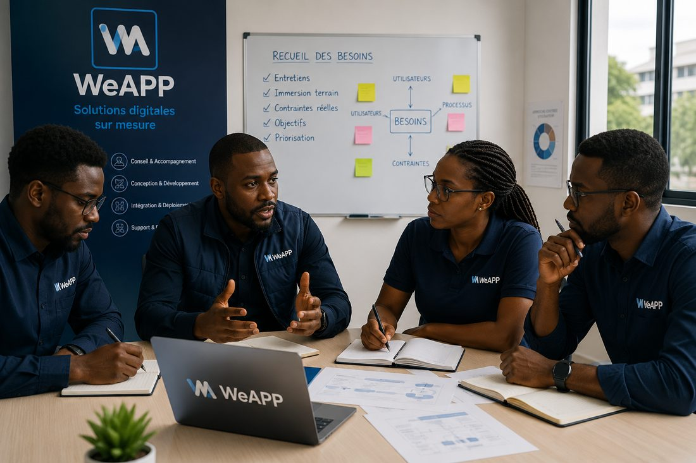
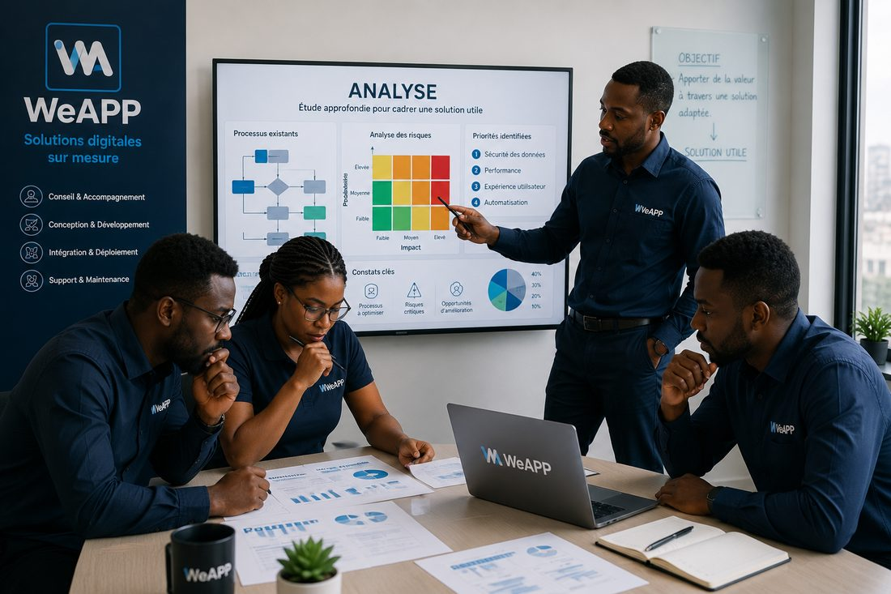
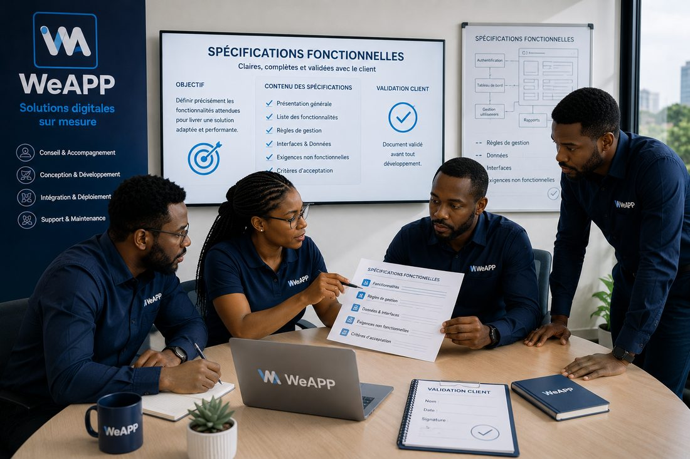
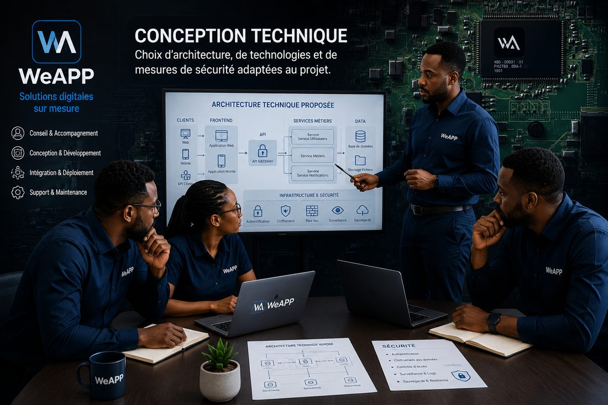
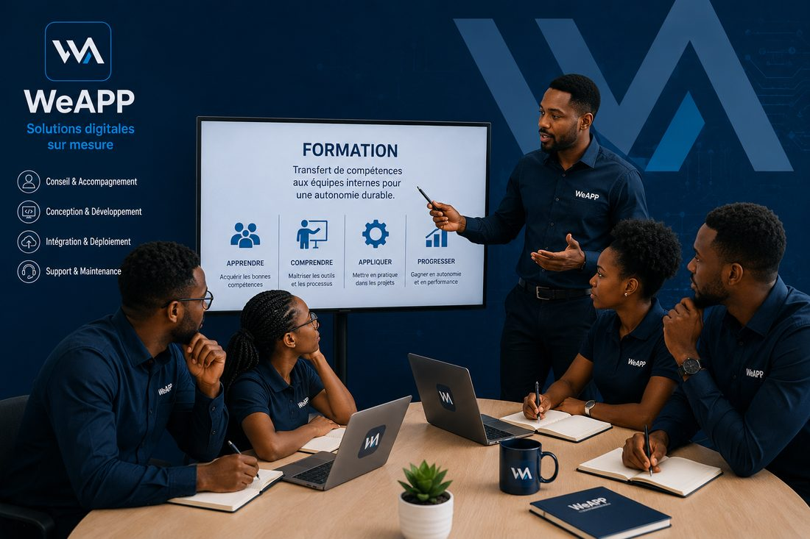

Méthodologie
Un processus structuré, de la conception au déploiement, pour garantir la qualité et la traçabilité de chaque projet.
De l'écoute du besoin à l'autonomie durable de vos équipes
Chaque projet WeAPP traverse ces cinq grandes phases, structurées et documentées, pour garantir un résultat fiable et une transition en douceur vers l'autonomie de votre organisation.
Recueil des besoins
Entretiens avec les parties prenantes, immersion dans le contexte opérationnel et identification des contraintes réelles du terrain — la base de tout projet bien cadré.

Analyse
Étude approfondie des processus existants, des risques et des priorités, pour cadrer une solution réellement utile et éviter les mauvaises surprises en cours de route.

Spécifications & conception fonctionnelle
Rédaction de spécifications fonctionnelles claires, définition des parcours utilisateurs et des règles de gestion — validées avec vous avant tout développement.

Conception technique, développement & déploiement
Choix d'architecture et de technologies adaptées, construction de la solution par itérations, tests rigoureux, puis mise en service accompagnée avec vigilance sur la continuité d'activité.

Formation, maintenance & archivage
Transfert de compétences aux équipes internes, suivi évolutif de la solution et capitalisation documentaire complète du projet — pour une autonomie durable.

Ce que cette méthode garantit
Transparence
Vous savez à tout moment où en est votre projet et ce qui a été validé.
Traçabilité
Chaque décision et chaque livrable est documenté et conservé.
Continuité
Vos équipes sont formées et accompagnées, même après le déploiement.